Introduction to R Graphics with ggplot2
Table of Contents
- Introduction
- Geometric Objects And Aesthetics
- Statistical Transformations
- Scales
- Faceting
- Themes
- The #1 FAQ
- Putting It All Together
- Wrap-up
rm(list=ls()) .First <- function() { options(width=70) options(useFancyQuotes=FALSE) require(ascii) require(xtable) require(ggplot2) require(scales) require(reshape2) require(plyr) theme_set(theme_bw()) png <<- function(res=96, width=500, height=300, ...) grDevices::png(res=res, width=width, height=height, ...) }
(load-file "../setupEnvironment.el")
Introduction
Materials and setup
Laptop users: You should have R installed –if not:
- Open a web browser and go to http://cran.r-project.org and download and install it
- Also helpful to install RStudio (download from http://rstudio.com)
- In R, type
install.packages("ggplot2")to install the ggplot2 package.
Everyone: Download workshop materials:
- Download materials from http://tutorials.iq.harvard.edu/R/Rgraphics.zip
- Extract the zip file containing the materials to your desktop
Workshop notes are available in .hmtl format. Open a file browser, navigate to your desktop and open Rgraphics.html
Workshop Overview
Class Structure and Organization:
- Ask questions at any time. Really!
- Collaboration is encouraged
- This is your class! Special requests are encouraged
This is an intermediate R course:
- Assumes working knowledge of R
- Relatively fast-paced
- Focus is on
ggplot2graphics–other packages will not be covered
Starting At The End
My goal: by the end of the workshop you will be able to reproduce this graphic from the Economist:

Why ggplot2?
Advantages of ggplot2
- consistent underlying
grammar of graphics(Wilkinson, 2005) - plot specification at a high level of abstraction
- very flexible
- theme system for polishing plot appearance
- mature and complete graphics system
- many users, active mailing list
That said, there are some things you cannot (or should not) do With ggplot2:
- 3-dimensional graphics (see the rgl package)
- Graph-theory type graphs (nodes/edges layout; see the igraph package)
- Interactive graphics (see the ggvis package)
What Is The Grammar Of Graphics?
The basic idea: independently specify plot building blocks and combine them to create just about any kind of graphical display you want. Building blocks of a graph include:
- data
- aesthetic mapping
- geometric object
- statistical transformations
- scales
- coordinate system
- position adjustments
- faceting
Example Data: Housing prices
Let's look at housing prices.
housing <- read.csv("dataSets/landdata-states.csv") head(housing[1:5])
> housing <- read.csv("dataSets/landdata-states.csv")
> head(housing[1:5])
State region Date Home.Value Structure.Cost
1 AK West 2010.25 224952 160599
2 AK West 2010.50 225511 160252
3 AK West 2009.75 225820 163791
4 AK West 2010.00 224994 161787
5 AK West 2008.00 234590 155400
6 AK West 2008.25 233714 157458
ggplot2 VS Base Graphics
Compared to base graphics, ggplot2
- is more verbose for simple / canned graphics
- is less verbose for complex / custom graphics
- does not have methods (data should always be in a
data.frame) - uses a different system for adding plot elements
ggplot2 VS Base for simple graphs
Base graphics histogram example:
hist(housing$Home.Value)
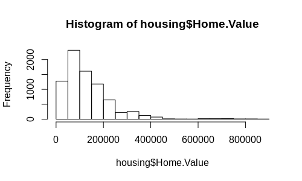
ggplot2 histogram example:
library(ggplot2)
ggplot(housing, aes(x = Home.Value)) +
geom_histogram()
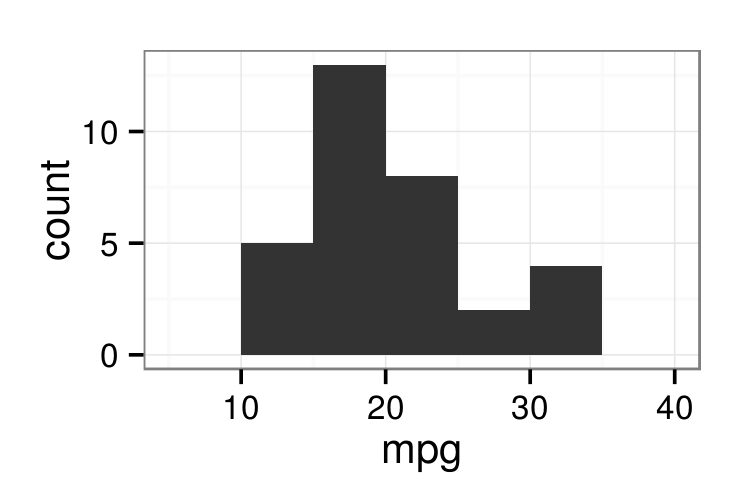 Base wins!
ggplot2 Base graphics VS ggplot for more complex graphs:
Base colored scatter plot example:
plot(Home.Value ~ Date,
data=subset(housing, State == "MA"))
points(Home.Value ~ Date, col="red",
data=subset(housing, State == "TX"))
legend(1975, 400000,
c("MA", "TX"), title="State",
col=c("black", "red"),
pch=c(1, 1))
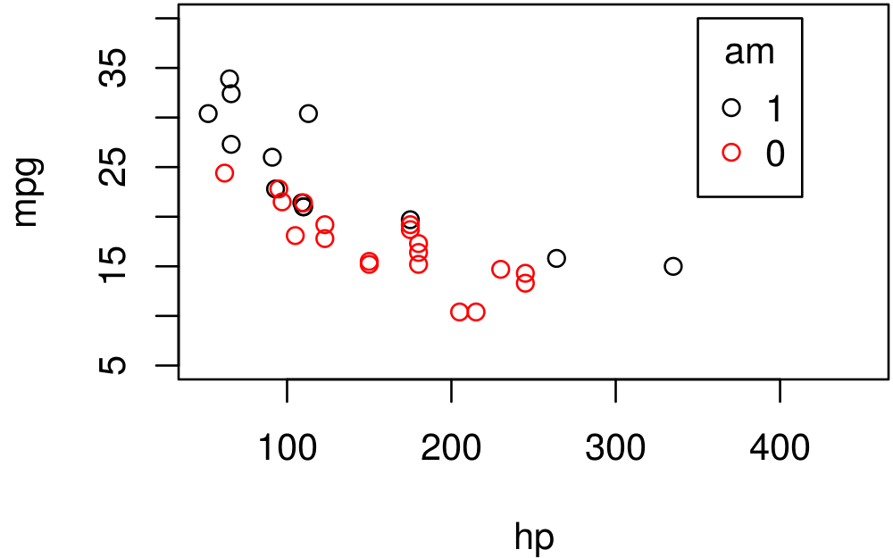
ggplot2 colored scatter plot example:
ggplot(subset(housing, State %in% c("MA", "TX")), aes(x=Date, y=Home.Value, color=State))+ geom_point()
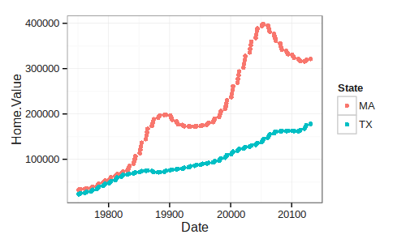
ggplot2 wins!
Geometric Objects And Aesthetics
Aesthetic Mapping
In ggplot land aesthetic means "something you can see". Examples include:
- position (i.e., on the x and y axes)
- color ("outside" color)
- fill ("inside" color)
- shape (of points)
- linetype
- size
Each type of geom accepts only a subset of all aesthetics–refer to the geom help pages to see what mappings each geom accepts. Aesthetic mappings are set with the aes() function.
Geometic Objects (geom)
Geometric objects are the actual marks we put on a plot. Examples include:
- points (
geom_point, for scatter plots, dot plots, etc) - lines (
geom_line, for time series, trend lines, etc) - boxplot (
geom_boxplot, for, well, boxplots!)
A plot must have at least one geom; there is no upper limit. You can add a geom to a plot using the + operator
You can get a list of available geometric objects using the code below:
help.search("geom_", package = "ggplot2")
or simply type geom_<tab> in any good R IDE (such as Rstudio or ESS) to see a list of functions starting with geom_.
Points (Scatterplot)
Now that we know about geometric objects and aesthetic mapping, we can make a ggplot. geom_point requires mappings for x and y, all others are optional.
hp2001Q1 <- subset(housing, Date == 2001.25)
ggplot(hp2001Q1,
aes(y = Structure.Cost, x = Land.Value)) +
geom_point()

ggplot(hp2001Q1,
aes(y = Structure.Cost, x = log(Land.Value))) +
geom_point()
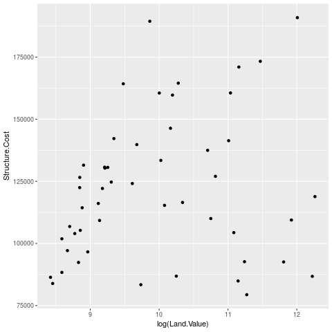
Lines (Prediction Line)
A plot constructed with ggplot can have more than one geom. In that case the mappings established in the ggplot() call are plot defaults that can be added to or overridden. Our plot could use a regression line:
hp2001Q1$pred.SC <- predict(lm(Structure.Cost ~ log(Land.Value), data = hp2001Q1)) p1 <- ggplot(hp2001Q1, aes(x = log(Land.Value), y = Structure.Cost)) p1 + geom_point(aes(color = Home.Value)) + geom_line(aes(y = pred.SC))
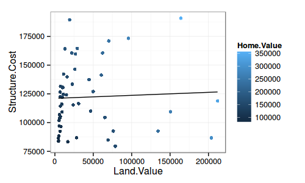
Smoothers
Not all geometric objects are simple shapes–the smooth geom includes a line and a ribbon.
p1 + geom_point(aes(color = Home.Value)) + geom_smooth()
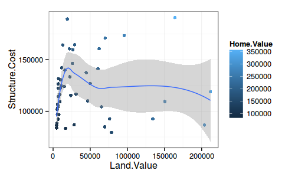
Text (Label Points)
Each geom accepts a particualar set of mappings–for example geom_text() accepts a labels mapping.
p1 + geom_text(aes(label=State), size = 3)
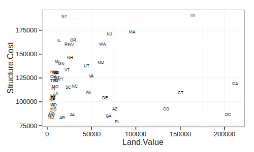
## install.packages("ggrepel") library("ggrepel") p1 + geom_point() + geom_text_repel(aes(label=State), size = 3)

Aesthetic Mapping VS Assignment
Note that variables are mapped to aesthetics with the aes() function, while fixed aesthetics are set outside the aes() call. This sometimes leads to confusion, as in this example:
p1 + geom_point(aes(size = 2),# incorrect! 2 is not a variable color="red") # this is fine -- all points red
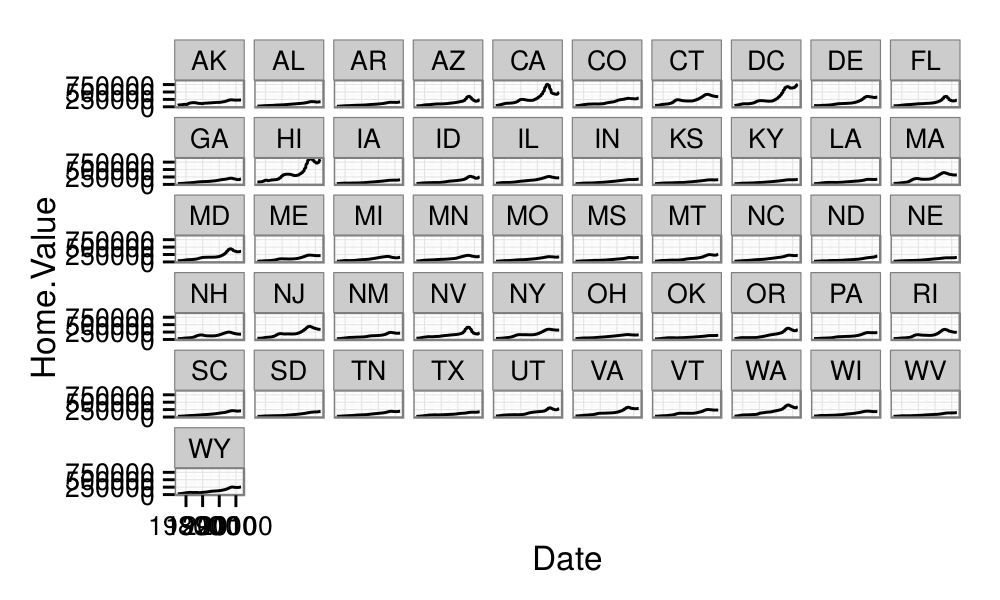
Mapping Variables To Other Aesthetics
Other aesthetics are mapped in the same way as x and y in the previous example.
p1 + geom_point(aes(color=Home.Value, shape = region))
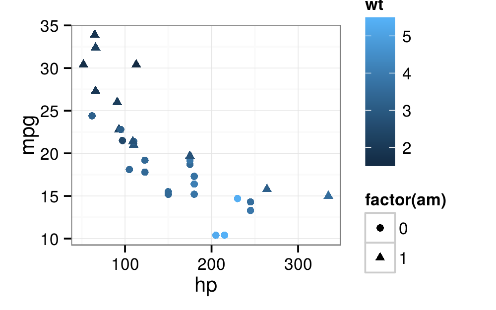
Exercise I
The data for the exercises is available in the dataSets/EconomistData.csv file. Read it in with
dat <- read.csv("dataSets/EconomistData.csv") head(dat) ggplot(dat, aes(x = CPI, y = HDI, size = HDI.Rank)) + geom_point()
> dat <- read.csv("dataSets/EconomistData.csv")
>
Original sources for these data are http://www.transparency.org/content/download/64476/1031428 http://hdrstats.undp.org/en/indicators/display_cf_xls_indicator.cfm?indicator_id=103106&lang=en
These data consist of Human Development Index and Corruption Perception Index scores for several countries.
- Create a scatter plot with CPI on the x axis and HDI on the y axis.
- Color the points blue.
- Map the color of the the points to Region.
- Make the points bigger by setting size to 2
- Map the size of the points to HDI.Rank
Statistical Transformations
Statistical Transformations
Some plot types (such as scatterplots) do not require transformations–each point is plotted at x and y coordinates equal to the original value. Other plots, such as boxplots, histograms, prediction lines etc. require statistical transformations:
- for a boxplot the y values must be transformed to the median and 1.5(IQR)
- for a smoother smother the y values must be transformed into predicted values
Each geom has a default statistic, but these can be changed. For example, the default statistic for geom_bar is stat_bin:
args(geom_histogram) args(stat_bin)
> args(geom_histogram)
function (mapping = NULL, data = NULL, stat = "bin", binwidth = NULL,
bins = NULL, origin = NULL, right = FALSE, position = "stack",
na.rm = FALSE, show.legend = NA, inherit.aes = TRUE, ...)
NULL
> args(stat_bin)
function (mapping = NULL, data = NULL, geom = "bar", position = "stack",
width = 0.9, drop = FALSE, right = FALSE, binwidth = NULL,
bins = NULL, origin = NULL, breaks = NULL, na.rm = FALSE,
show.legend = NA, inherit.aes = TRUE, ...)
NULL
>
Setting Statistical Transformation Arguments
Arguments to stat_ functions can be passed through geom_ functions. This can be slightly annoying because in order to change it you have to first determine which stat the geom uses, then determine the arguments to that stat.
For example, here is the default histogram of Home.Value:
p2 <- ggplot(housing, aes(x = Home.Value))
p2 + geom_histogram()
 The binwidth looks reasonable by default, but we can change it by passing the
The binwidth looks reasonable by default, but we can change it by passing the binwidth argument to the stat_bin function:
p2 + geom_histogram(stat = "bin", binwidth=4000)
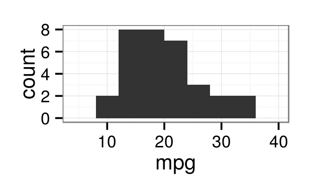
Changing The Statistical Transformation
Sometimes the default statistical transformation is not what you need. This is often the case with pre-summarized data:
housing.sum <- aggregate(housing["Home.Value"], housing["State"], FUN=mean) rbind(head(housing.sum), tail(housing.sum))
> housing.sum <- aggregate(housing["Home.Value"], housing["State"], FUN=mean) > rbind(head(housing.sum), tail(housing.sum)) State Home.Value 1 AK 147385 2 AL 92545 3 AR 82077 4 AZ 140756 5 CA 282808 6 CO 158176 46 VA 155391 47 VT 132395 48 WA 178523 49 WI 108359 50 WV 77162 51 WY 122897 >
ggplot(housing.sum, aes(x=State, y=Home.Value)) + geom_bar()
ggplot(housing.sum, aes(x=State, y=Home.Value)) + geom_bar() Error: stat_count() must not be used with a y aesthetic.
What is the problem with the previous plot? Basically we take binned and summarized data and ask ggplot to bin and summarize it again (remember, geom_bar defaults to stat = stat_count); obviously this will not work. We can fix it by telling geom_bar to use a different statistical transformation function:
ggplot(housing.sum, aes(x=State, y=Home.Value)) +
geom_bar(stat="identity")
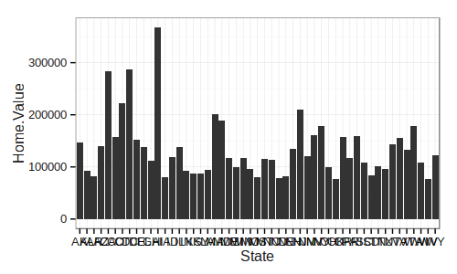
Exercise II
- Re-create a scatter plot with CPI on the x axis and HDI on the y axis (as you did in the previous exercise).
- Overlay a smoothing line on top of the scatter plot using
geom_smooth. - Overlay a smoothing line on top of the scatter plot using
geom_smooth, but use a linear model for the predictions. Hint: see?stat_smooth. - Overlay a smoothing line on top of the scatter plot using
geom_line. Hint: change the statistical transformation. - BONUS: Overlay a smoothing line on top of the scatter plot using the default loess method, but make it less smooth. Hint: see
?loess.
Scales
Scales: Controlling Aesthetic Mapping
Aesthetic mapping (i.e., with aes()) only says that a variable should be mapped to an aesthetic. It doesn't say how that should happen. For example, when mapping a variable to shape with aes(shape = x) you don't say what shapes should be used. Similarly, aes(color = z) doesn't say what colors should be used. Describing what colors/shapes/sizes etc. to use is done by modifying the corresponding scale. In ggplot2 scales include
- position
- color and fill
- size
- shape
- line type
Scales are modified with a series of functions using a scale_<aesthetic>_<type> naming scheme. Try typing scale_<tab> to see a list of scale modification functions.
Common Scale Arguments
The following arguments are common to most scales in ggplot2:
- name
- the first argument gives the axis or legend title
- limits
- the minimum and maximum of the scale
- breaks
- the points along the scale where labels should appear
- labels
- the labels that appear at each break
Specific scale functions may have additional arguments; for example, the scale_color_continuous function has arguments low and high for setting the colors at the low and high end of the scale.
Scale Modification Examples
Start by constructing a dotplot showing the distribution of home values by Date and State.
p3 <- ggplot(housing, aes(x = State, y = Home.Price.Index)) + theme(legend.position="top", axis.text=element_text(size = 6)) (p4 <- p3 + geom_point(aes(color = Date), alpha = 0.5, size = 1.5, position = position_jitter(width = 0.25, height = 0)))
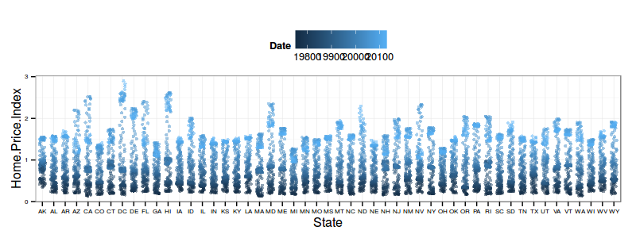
Now modify the breaks for the x axis and color scales
p4 + scale_x_discrete(name="State Abbreviation") + scale_color_continuous(name="", breaks = c(1976, 1994, 2013), labels = c("'76", "'94", "'13"))
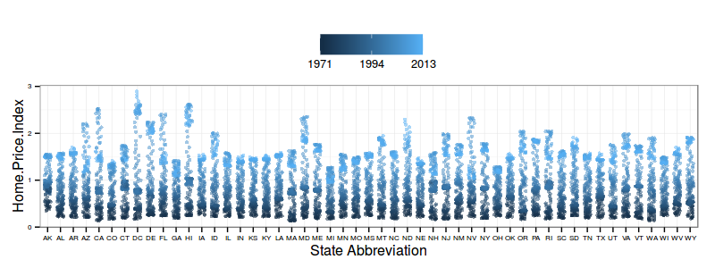
Next change the low and high values to blue and red:
p4 + scale_x_discrete(name="State Abbreviation") + scale_color_continuous(name="", breaks = c(1976, 1994, 2013), labels = c("'76", "'94", "'13"), low = "blue", high = "red")
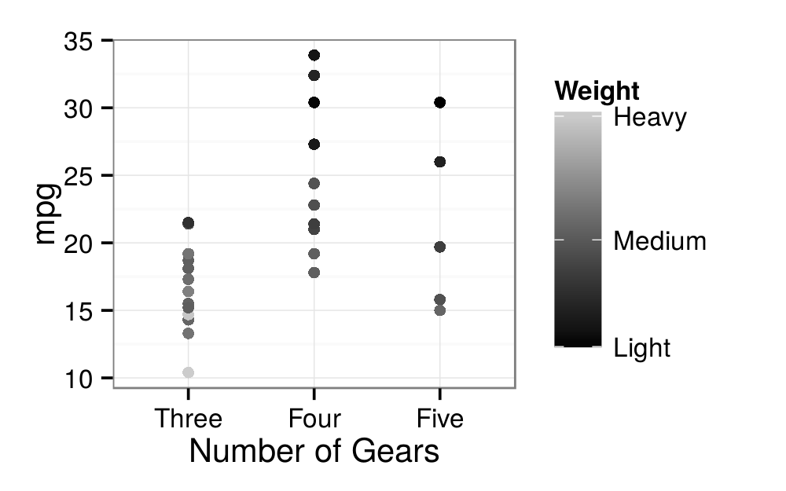
p4 + scale_color_continuous(name="", breaks = c(1976, 1994, 2013), labels = c("'76", "'94", "'13"), low = muted("blue"), high = muted("red"))
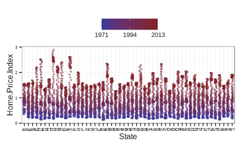
Using different color scales
ggplot2 has a wide variety of color scales; here is an example using scale_color_gradient2 to interpolate between three different colors.
p4 + scale_color_gradient2(name="", breaks = c(1976, 1994, 2013), labels = c("'76", "'94", "'13"), low = muted("blue"), high = muted("red"), mid = "gray60", midpoint = 1994)
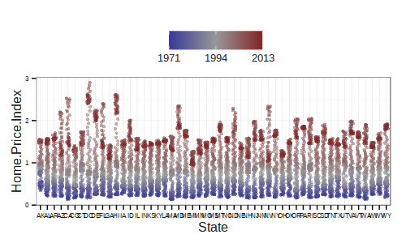
Available Scales
- Partial combination matrix of available scales
| Scale | Types | Examples |
|---|---|---|
scale_color_ |
identity |
scale_fill_continuous |
scale_fill_ |
manual |
scale_color_discrete |
scale_size_ |
continuous |
scale_size_manual |
discrete |
scale_size_discrete |
|
scale_shape_ |
discrete |
scale_shape_discrete |
scale_linetype_ |
identity |
scale_shape_manual |
manual |
scale_linetype_discrete |
|
scale_x_ |
continuous |
scale_x_continuous |
scale_y_ |
discrete |
scale_y_discrete |
reverse |
scale_x_log |
|
log |
scale_y_reverse |
|
date |
scale_x_date |
|
datetime |
scale_y_datetime |
|
Note that in RStudio you can type scale_ followed by TAB to get the whole list of available scales.
Exercise III
- Create a scatter plot with CPI on the x axis and HDI on the y axis. Color the points to indicate region.
- Modify the x, y, and color scales so that they have more easily-understood names (e.g., spell out "Human development Index" instead of "HDI").
- Modify the color scale to use specific values of your choosing. Hint: see
?scale_color_manual.
Faceting
Faceting
- Faceting is
ggplot2parlance for small multiples - The idea is to create separate graphs for subsets of data
ggplot2offers two functions for creating small multiples:facet_wrap(): define subsets as the levels of a single grouping variablefacet_grid(): define subsets as the crossing of two grouping variables
- Facilitates comparison among plots, not just of geoms within a plot
What is the trend in housing prices in each state?
- Start by using a technique we already know–map State to color:
p5 <- ggplot(housing, aes(x = Date, y = Home.Value))
p5 + geom_line(aes(color = State))
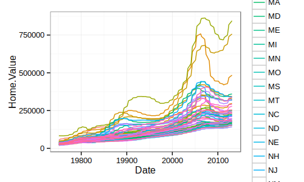
There are two problems here–there are too many states to distinguish each one by color, and the lines obscure one another.
Faceting to the rescue
We can remedy the deficiencies of the previous plot by faceting by state rather than mapping state to color.
(p5 <- p5 + geom_line() +
facet_wrap(~State, ncol = 10))
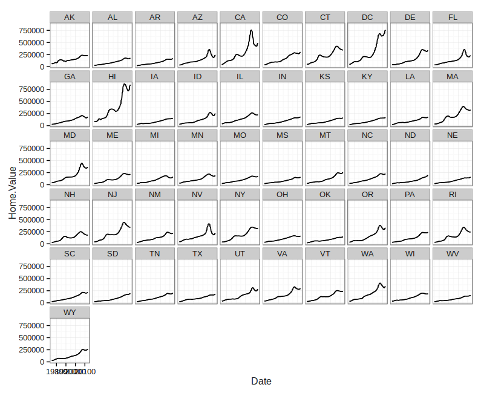
There is also a facet_grid() function for faceting in two dimensions.
Themes
Themes
The ggplot2 theme system handles non-data plot elements such as
- Axis labels
- Plot background
- Facet label backround
- Legend appearance
Built-in themes include:
theme_gray()(default)theme_bw()theme_classc()
p5 + theme_linedraw()
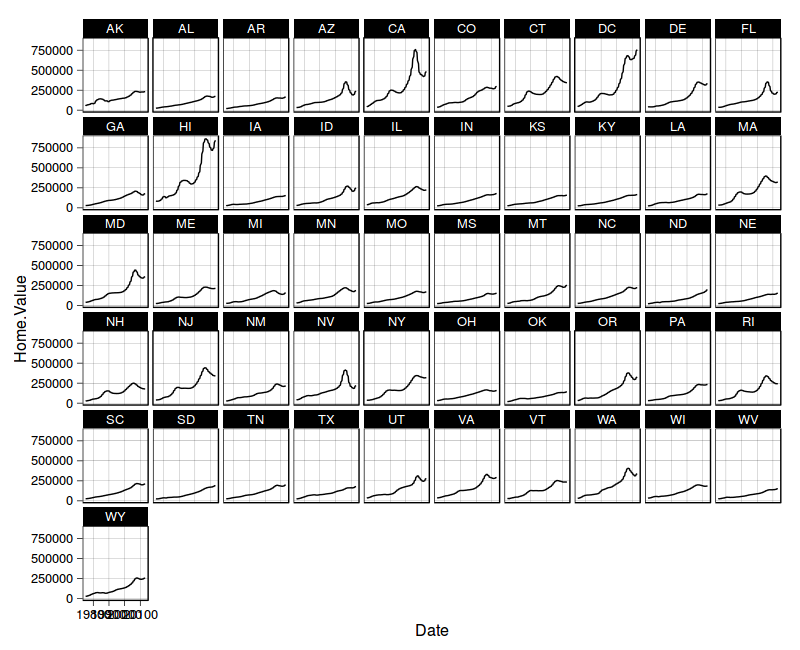
p5 + theme_light()
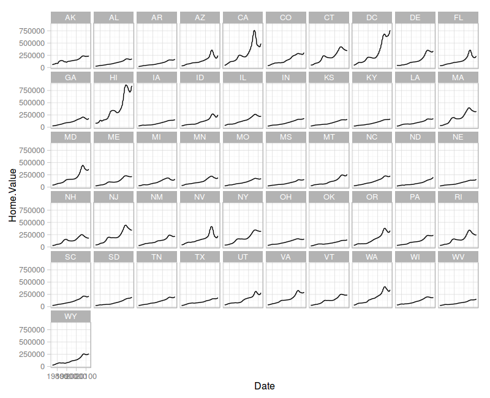
Overriding theme defaults
Specific theme elements can be overridden using theme(). For example:
p5 + theme_minimal() +
theme(text = element_text(color = "turquoise"))
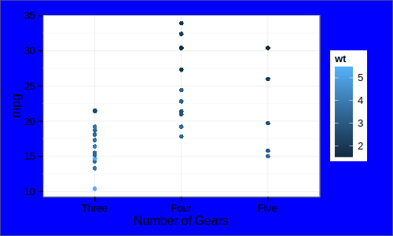
All theme options are documented in ?theme.
Creating and saving new themes
You can create new themes, as in the following example:
theme_new <- theme_bw() + theme(plot.background = element_rect(size = 1, color = "blue", fill = "black"), text=element_text(size = 12, family = "Serif", color = "ivory"), axis.text.y = element_text(colour = "purple"), axis.text.x = element_text(colour = "red"), panel.background = element_rect(fill = "pink"), strip.background = element_rect(fill = muted("orange"))) p5 + theme_new
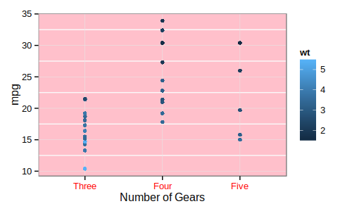
The #1 FAQ
Map Aesthetic To Different Columns
The most frequently asked question goes something like this: I have two variables in my data.frame, and I'd like to plot them as separate points, with different color depending on which variable it is. How do I do that?
Wrong
housing.byyear <- aggregate(cbind(Home.Value, Land.Value) ~ Date, data = housing, mean) ggplot(housing.byyear, aes(x=Date)) + geom_line(aes(y=Home.Value), color="red") + geom_line(aes(y=Land.Value), color="blue") #
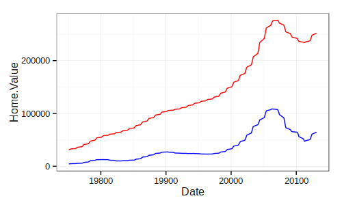
Right
library(tidyr) home.land.byyear <- gather(housing.byyear, value = "value", key = "type", Home.Value, Land.Value) ggplot(home.land.byyear, aes(x=Date, y=value, color=type)) + geom_line()
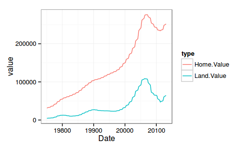
Putting It All Together
Challenge: Recreate This Economist Graph
Graph source: http://www.economist.com/node/21541178
Building off of the graphics you created in the previous exercises, put the finishing touches to make it as close as possible to the original economist graph.
Wrap-up
Help Us Make This Workshop Better!
- Please take a moment to fill out a very short feedback form
- These workshops exist for you – tell us what you need!
- http://tinyurl.com/R-graphics-feedback
Additional resources
- ggplot2 resources
- Mailing list: http://groups.google.com/group/ggplot2
- Wiki: https://github.com/hadley/ggplot2/wiki
- Website: http://had.co.nz/ggplot2/
- StackOverflow: http://stackoverflow.com/questions/tagged/ggplot
- IQSS resources
- Research technology consulting: http://dss.iq.harvard.edu
- Workshops materials: http://dss.iq.harvard.edu/workshop-materials
- Workshop schedule and registration: http://dss.iq.harvard.edu/workshop-registration